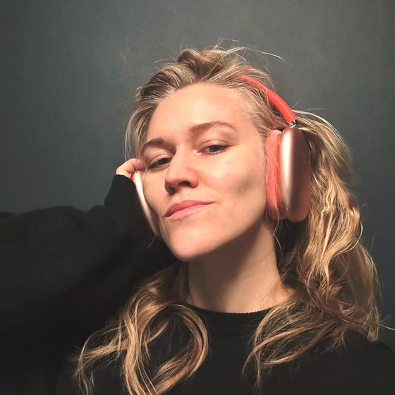
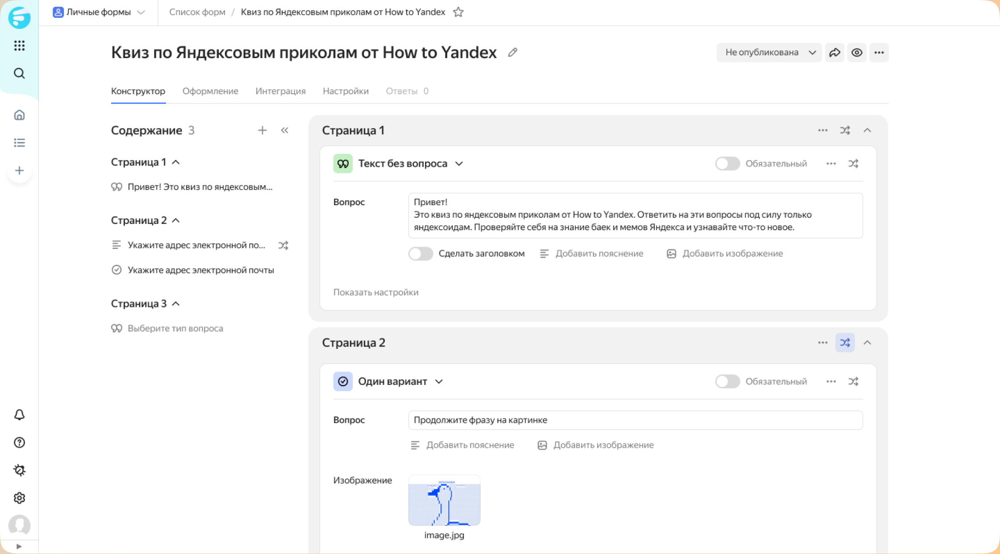

Ekaterina
Mokhova
10+ years designing large products
- Yandex 2017—25
- Kontur 2012—17
- Jetstyle 2010—11

(skills)
UX research
Product UI
Figma
HTML + CSS + JS prototypes,
specs, MVPs
Writing
Web analytics
B2B, B2C, B2E
Web, mobile
5 foreign languages EN, DE, FR,
JP, CN
(experience)
Yandex 2017—2025
- Forms: a full redesign. Moved the service onto the company’s design system and pushed the metrics up.
- Schedules and Trains: reworked the buying flow. Conversion grew, especially on mobile.
- Helped build the Yandex.Travel portal: one design system across the verticals, and a single checkout each of them could use.
- Moved Trains and Buses onto the portal end to end — new search results, new checkout.
- Launched the Hotels vertical, then owned the hotel page.
Kontur 2012—2017
- Designed billing and a CRM for the sales teams and partners from scratch. The case is written up here.
- Built the MVP of a new employee directory, wired into the other internal services, with personal blogs and social features.
- Sat on Kontur’s design council and helped write Kontur.Guides.
Jetstyle 2010—2011
- Gathered requirements from clients, built prototypes, ran interviews and analyzed the metrics. Audited websites and prototyped for the graphic designers.
- Projects included the site of the Sverdlovsk Region Legislative Assembly, large portals for building materials and rentals, and Yandex.Schedules.
(cases)

Yandex.Forms
(2024—2025) (WEB) (B2E)
Read the case →
soon
Yandex.Travel
(2020—2024) (WEB) (MOBILE)
soon
Yandex.Suburban Trains
(2017—2020) (APP)
(about me)
I have a lot of empathy and I put usefulness first, which is why I like working on something for the long haul. I look for the way to make it genuinely easy for the people who trust a product with their time and their data — technical limits and deadlines included.
I like adding emotion. Even when the tone of voice is formal, I find a way to make the interaction warmer: visually, or through the language the product speaks.
I follow process and method when they get us to a result. I have no patience for process for its own sake, and I would rather take the decision on myself than spend a hundred people-hours on a discussion that never ends.
I am curious by default, so I keep growing sideways: data visualization with Tanya Misyutina, copy editing with Maxim Ilyahov, typography and layout with Igor Shtang, JavaScript at HTML Academy.
(words)
Emotional and honest.
From colleagues, clients and users
My art director
Every now and then I get one of these fits of “love for people”. In those moments I am struck by how lucky I have been with the people I get to work with. Katya Mokhova is one of them.
We did not meet through work — she helped me into the profession before I ever joined Kontur. Back then I called her my art director, because she looked at my work and fixed it, over and over. How much of herself she put into that left me honestly grateful.
At some point I stopped coming to her; I simply did not need to anymore, and the sense of her as a mentor faded a little. Then not long ago I got the chance to work with her on a project, and I loved every minute of it.
She is very easy to work with, for at least two reasons: she always knows what she is doing and why, and she never wavers. There is none of that “today we go by these principles, tomorrow the weather changes and we go by different ones, because we do not know what we want”.
I also know what she is solving on her main project, and sometimes I think her team does not quite realize how lucky they are to have her designing it.
If I grind a piece of work down to what looks like perfection to me, with no questions left in it, and then show it to her — she will still find the flaws. And she does not have to sit and think about it. She just sees them.
Somewhere far away, Chuck Norris gives a standing ovation when she designs.
— a colleague at Kontur
Katya, the artist’s answer is short — bliss ))
It was great working with you too, you are a real push to keep my own level up ))
That turned out so cool!! The visuals are killer